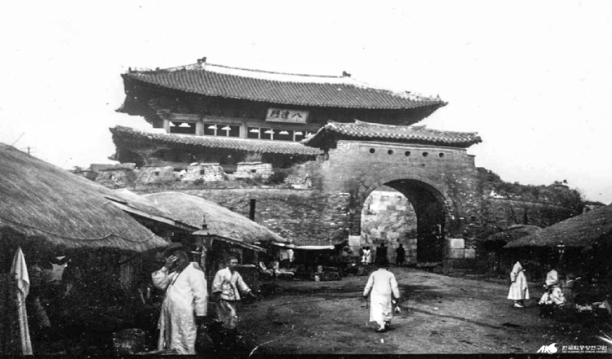

팔달문
- 수원 팔달문
- 수원 성곽은 1794년(정조 18)에 정조(正祖)의 아버지 사도세자(思悼世子)의 능을 양주에서 수원으로 옮기면서
짓기 시작하여 1796년(정조 20)에 완성한 수원시를 대표하는 성곽이다. 이 성곽의 남쪽에 자리한 이 문은 정면 5칸,
측면 2칸의 중층 우진각지붕건물이다. 1796년(정조 20) 수원에 성곽을 쌓으면서 그 남문으로 세운 문으로, 성의 서쪽에
팔달산이 있어 거기서 이름을 따왔다.북문인 장안문(長安門)과 함께 성안의 여러 건물 중 가장 장대하고 화려하게 지었다.
화강암 석축으로 된 홍예문(虹蜺門)과 무사석(武砂石) 기부(基部) 위에 중층(重層)의 문루를 세웠다.
팔달문
- 수원 팔달문
- 이 옹성은 무사석보다 낮게 규격이 큰 전(塼)돌로 쌓았는데 높이가 약 5m, 상부의 안너비가 3.28m로 그 위 양측에는
凸모양의 여장(女墻 : 성 위에 낮게 쌓은 담)을 쌓아서 타(垛)와 타구(垛口 : 성가퀴), 근·원총안(近遠銃眼)·현안(懸眼)을 두고 있으며,
중앙부에는 통행할 수 있게 용도(用道)를 만들었다.또한 옹성의 남쪽 중앙에는 문루 홍예석과 축을 맞추어 홍예를 설치하였고, 그 위에는 단을 높여
외부로 5개의 둥근 구멍을 낸 오성지(五星池)를 설치하였으며 내부 쪽으로 정면과 측면 각각 1칸인 누각을 세웠다.
팔달문
- 수원 팔달문
- 문의 무사석 양끝은 성벽이 연결되어 동서의 적대(敵臺)를 두고 있으며, 기부의 양쪽에 계단이 있어 문루로 오르게 되어 있다.
문루는 아래층 중앙칸에는 마루를 놓았으며, 상층에도 우물마루를 깔았다. 기부 위에 자연석 주초가 놓이고 둥근기둥을 세웠으며,
기둥 위에 짜여진 공포(栱包)는 다포식(多包式)으로 아래층은 내삼출목, 외이출목, 위층은 내외 다같이 삼출목이다.
공포의 형식은 조선 후기의 수법을 보여 기둥 위에 안초공(安草工)을 두었고, 외부로는 앙서〔仰舌〕와 수서〔垂舌〕를 두어 끝이 가늘고 길게 나왔으며,
내부로는 운공(雲空)과 같은 복잡한 조각을 보이고 있다.
